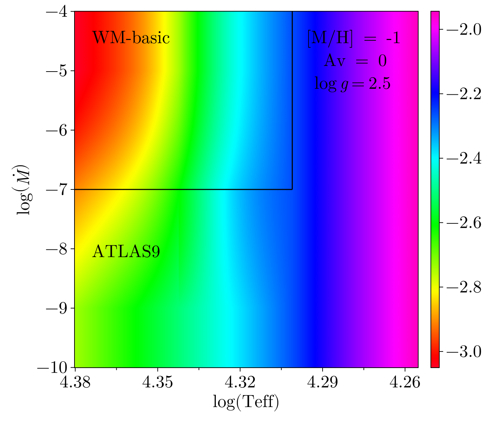
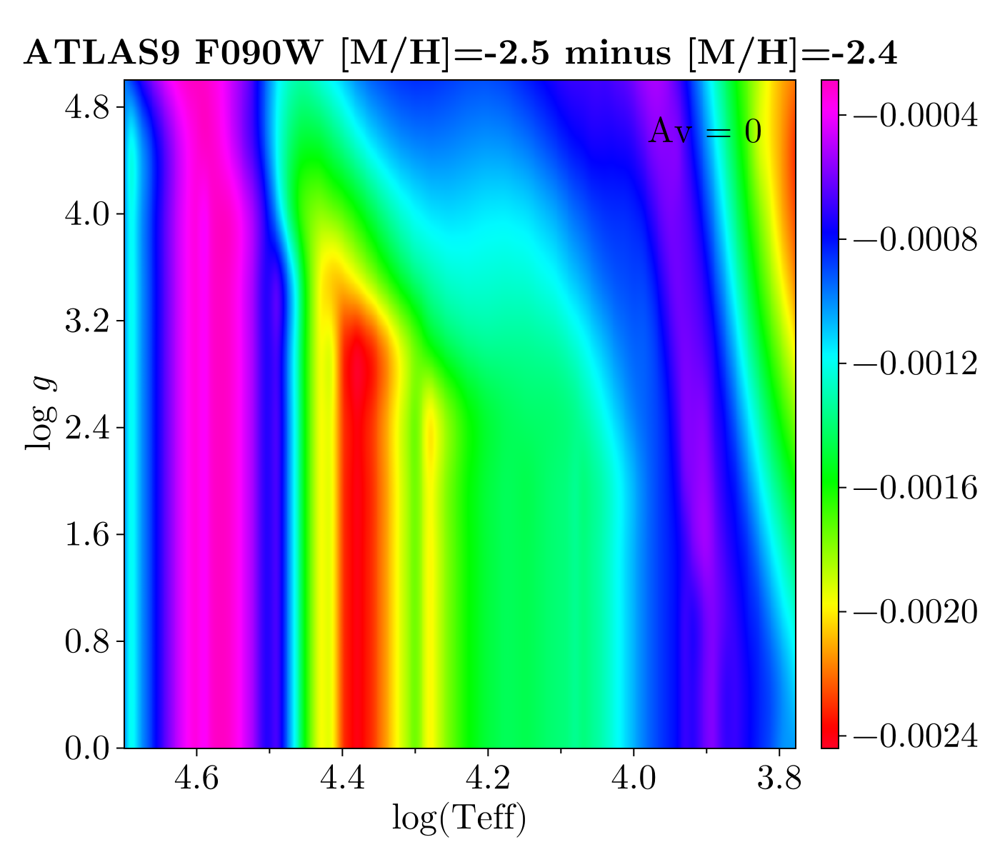
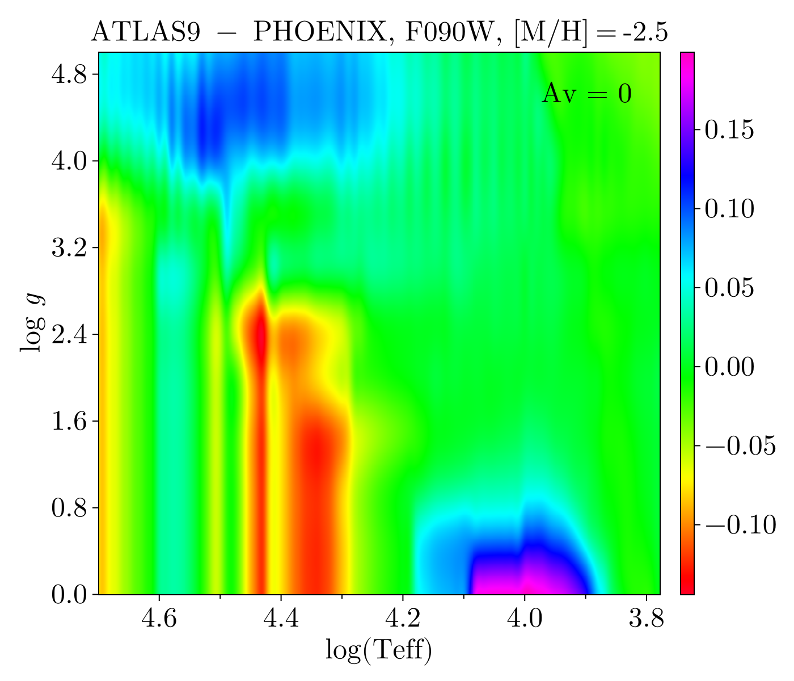
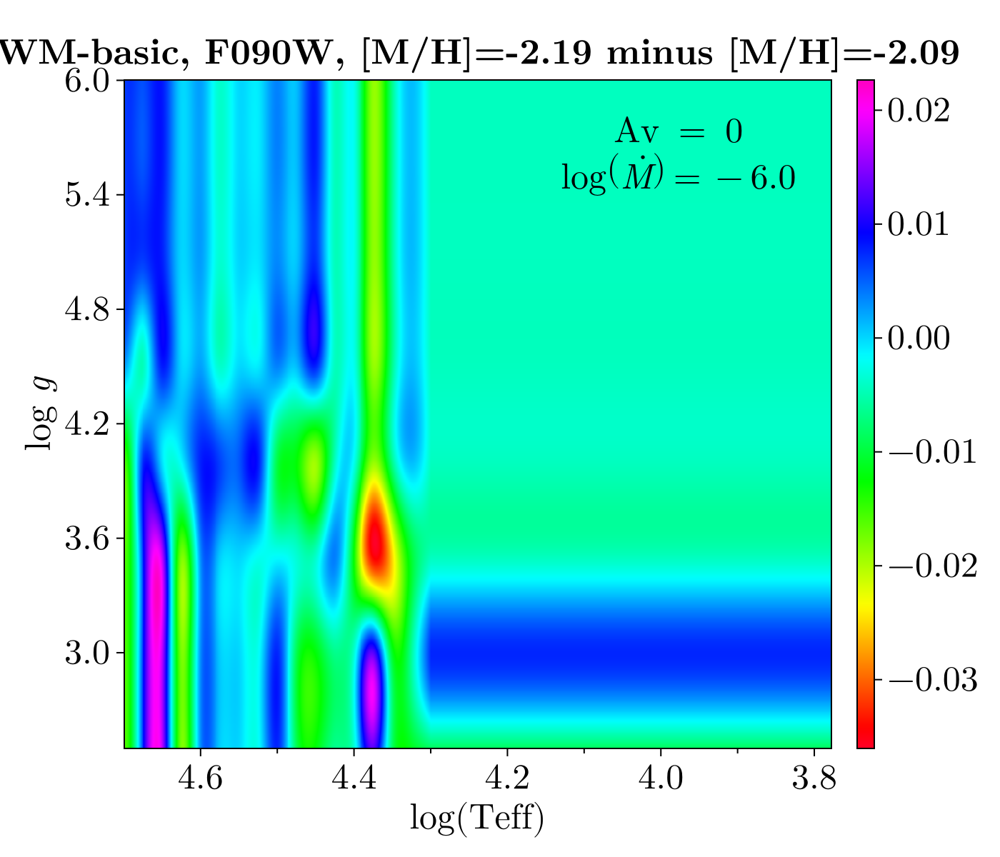
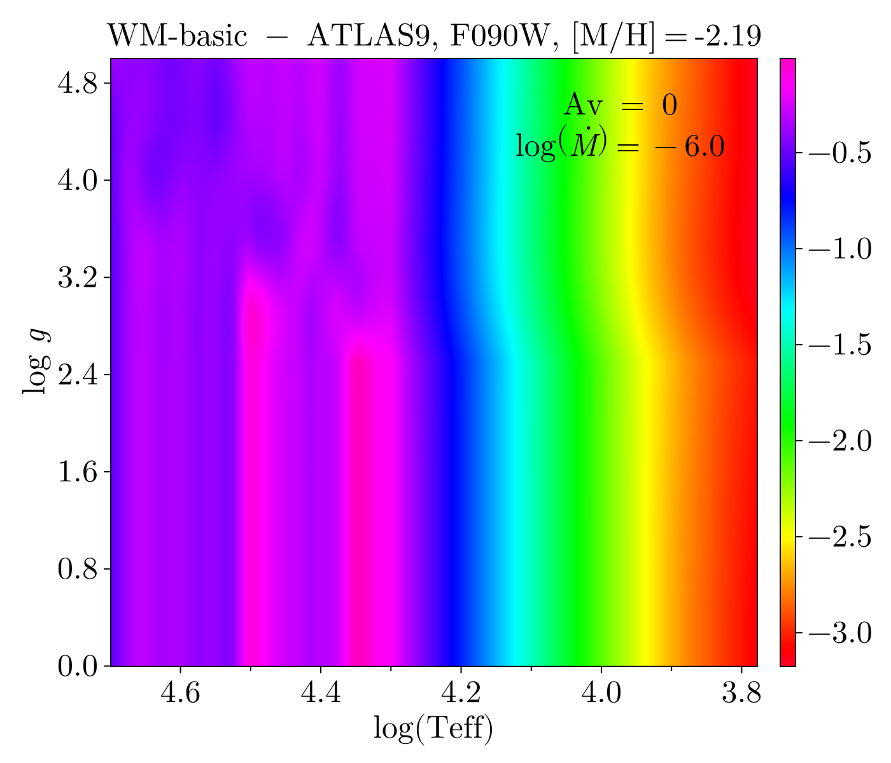

YBC
This submodule enables interaction with the "YBC" bolometric correction (BC) grid described in Chen et al. (2019). These BCs are commonly used in conjunction with the PARSEC stellar models and are used in the "CMD webform" maintained by Leo Girardi. The YBC grid presents a uniform processing of a number of different stellar atmosphere libraries (see section 3.1 of Chen et al. (2019)) that each cover different parameter spaces (e.g., surface gravity and effective temperature) as well as different types of stars (e.g., Wolf-Rayet stars, white dwarfs). This approach allows YBC to be robust across a broad range of stellar evolutionary states and makes it very useful for generating synthetic stellar photometry. However, many of these libraries are only used when particular stellar conditions are met, and not all libraries cover the same range of stellar population parameters (metallicity in particular).
Our implementation currently only supports a subset of the libraries in the full YBC set. In particular, we support the PHOENIX models (used for cool stars), the ATLAS9 models (used for hot stars), the Koester & Tremblay white dwarf models, and the WM-basic O and B star models. Interpolation between these libraries as a function of stellar properties is supported by the YBCGrid and YBCTable types.
Obtaining Data
Our naming convention for photometric filter systems follows the directory structure of the YBC git repository – see supported systems below. This repository can be accessed at the URL below.
https://gitlab.com/cycyustc/ybc_tablesThe data are obtained by creating a local sparse clone of the YBC git repository with Scratch.jl and only pulling the data for photometric systems that you request. Presently we only support the standard BCs hosted under the "YBC" subdirectory. These data will be removed automatically if you uninstall the package. In the event you wish to uninstall the data for a particular photometric filter system, you can use BolometricCorrections.YBC.remove_table, though this should not typically be necessary as the data for each system is on average ~20 MB.
BolometricCorrections.YBC.remove_table — Functionremove_table(f::AbstractString, prefix::AbstractString = "YBC")Remove table joinpath(prefix, f) from the Git sparse-checkout list for YBC – this will uninstall the related data files.
Supported Systems
Supported filter systems available at the time these docs were built are listed below.
2mass decam hipparcos lsst_gaiaDR2maiz suprimecam wfc3_medium
2mass_spitzer decam_vircam hsc lsst_wfirst_notional swift_uvot wfc3_uvisCaHK
2mass_spitzer_wise deltaa int_wfc lsst_wfirst_proposed2017 tycho2 wfc3_verywide
CSST denis iphas megacam ubvrijhk wfc3_wide
LUVIT dmc14 jpas megacam_post2014 ubvrijhklm wfc3_wideverywide
Roman2021 dmc15 jwst_fnl megacam_wircam ukidss wfi
Roman2024 dualclump jwst_miri_wide nicmosab uvit wfi2
TESS_2mass duets jwst_narrow nicmosvega vertecs wfirst
TESS_2mass_kepler eis jwst_nircam_wide noao_ctio_mosaic2 vilnius wfirst_J_H_1
UVbright euclid_decam jwst_nircam_widemedium ogle vircam wfirst_J_H_2
WFIRST_plusHST euclid_nisp jwst_nircam_widemedium_nov22 ogle_2mass_spitzer visir wfirst_J_H_3
acs_2mass_spitzer gaia jwst_niriss_nov22 panstarrs1 vista wfirst_J_H_7_1
acs_hrc gaiaDR2 jwst_nirspec phat_agb vista_ukidss wfirst_J_H_7_2
acs_wfc gaiaDR2_tycho2_2mass jwst_wide phat_small vphas wfirst_notional
acs_wfc_202101 gaiaDR2maiz keck_nirc2 phat_spitzer vst_omegacam wfirst_plusHST
acs_wfc_pos04jul06 gaiaDR2weiler kepler sage vst_vista wfirst_proposed2017
acs_wfc_pre04jul06 gaiaDR2weiler_tycho2_2mass kepler_2mass skymapper washington_ddo51 wfirst_shift_2
akari gaiaDR3sim lbt_lbc sloan wasp wfirst_shift_3
batc gaiaEDR3 lsst sloan_2mass wfc3_202101_IR_narrow wfpc2
bessell gaia_tycho2_2mass lsstDP0 sloan_ukidss wfc3_202101_UVIS_narrow wircam
caspir galex lsstR1.9 spitzer wfc3_202101_medium wise
ciber galex_sloan lsstR1.9_gaiaEDR3_euclid splus wfc3_202101_verywide ztf
ciber2 galexgaia lsst_gaia stis wfc3_202101_wide
clue_galex gulli lsst_gaiaDR2 stroemgren wfc3_UVIS_narrowWe illustrate which model library is used as a function of surface gravity logg and effective temperature Teff for stars without outflows (Mdot = 0) below.
We illustrate the transition between the ATLAS9 models used for hot stars and the WM-basic models used for O- and B-type stars with radiation-driven outflows at fixed surface gravity below.
Types
BolometricCorrections.YBC.YBCGrid — TypeYBCGrid(grid::AbstractString;
extrapolate::Bool = true,
mass_loss_model::AbstractMassLoss = Bjorklund2021MassLoss())Load and return the YBC (Chen et al., 2019) bolometric corrections for the given photometric system grid, which must be a valid entry in BolometricCorrections.YBC.systems. This model interpolates between bolometric correction grids derived from several different atmosphere libraries – the individual grids that make up the integrated YBCGrid are PHOENIX, ATLAS9, the Koester & Tremblay white dwarf grid, and the WM-basic O and B star grid.
This type is used to create instances of YBCTable that have fixed dependent grid variables ([M/H], Av). This can be done either by calling an instance of YBCGrid with (mh, Av) arguments or by using the appropriate constructor for YBCTable.
If extrapolate = true, the ATLAS9 and WM-basic libraries will be extrapolated in metallicity with flat boundary conditions to match the metallicity coverage of the PHOENIX library. See the docs here for more information.
The mass_loss_model::AbstractMassLoss is used to calculate mass-loss rates on the fly for use with the WM-basic O and B star grid. See the docs for YBCTable for an example of how the mass-loss model is used.
julia> using BolometricCorrections.YBC: YBCGrid
julia> grid = YBCGrid("acs_wfc")
YBC bolometric correction grid for photometric system YBC/acs_wfc.
julia> grid(-1.01, 0.11) # Can be called to construct table with interpolated [M/H], Av
YBC bolometric correction table for system YBC/acs_wfc with [M/H] -1.01 and V-band extinction 0.11BolometricCorrections.YBC.YBCTable — TypeYBCTable(grid::YBCGrid, mh::Real, Av::Real)Interpolates the YBC bolometric corrections in grid to a fixed value of [M/H] (mh), V-band extinction (Av), leaving only Teff, logg, and Mdot as dependent variables. Returns an instance that is callable with arguments (Teff [K], logg [cgs], Mdot [solMass / yr]) to interpolate the bolometric corrections as a function of temperature, surface gravity, and mass outflow rate.
julia> using BolometricCorrections.YBC: YBCGrid, YBCTable
julia> grid = YBCGrid("acs_wfc")
YBC bolometric correction grid for photometric system YBC/acs_wfc.
julia> table = YBCTable(grid, -1.01, 0.011) # Interpolate table from full grid
YBC bolometric correction table for system YBC/acs_wfc with [M/H] -1.01 and V-band extinction 0.011
julia> length(table(25_0254.0, 2.54, 0.0)) == 12 # Returns BC in each filter
true
julia> size(table([25_0254.0, 25_0354.0], [2.54, 2.56], [0.0, 5e-6])) # `table(array, array)` is also supported
(12, 2)
julia> using TypedTables: Table # `table(Table, array, array)` will return result as a Table
julia> table(Table, [25_0254.0, 25_0354.0], [2.54, 2.56], [0.0, 5e-6]) isa Table
trueThe YBC WM-basic BCs require the mass outflow rate Mdot. When called with two arguments, it is assumed the arguments are Teff, logg and that Mdot=0 such that the WM-basic models are not used.
julia> table(25_0254.0, 2.54) == table(25_0254.0, 2.54, 0.0)
trueIf called via the one-argument method, taking types like NamedTuple, required parameters will be parsed from the provided argument. If quantities sufficient to estimate a mass-loss rate are identified, then the mass-loss rate will be automatically estimated and the WM-basic models will be used when appropriate. An example of this usage is given below – the default Bjorklund2021MassLoss model is used, which calculates the stellar mass-loss rate from the metallicity (i.e., Z(table)) and the luminosity logL. logg and Teff are treated normally.
julia> table((logg = 2.54, Teff = 25_054.0, logL = 5)) isa AbstractVector
trueChemistry API
We provide the BolometricCorrections.YBC.PARSECChemistry type to access information on the solar chemical abundances assumed for the PARSEC stellar models (see also Bressan et al. (2012)) and YBC bolometric correction library.
BolometricCorrections.YBC.PARSECChemistry — TypePARSECChemistry()Returns a singleton struct representing the PARSEC chemical mixture model. We presently only include scaled-solar models. The solar protostellar chemical mixture for PARSEC was calibrated to reproduce solar photospheric observations via a forward modeling approach (see section 3 of Bressan et al. (2012)). The full solar calibration assumed for PARSEC is given in Table 3 of Bressan et al. (2012). The distribution of heavy metals is taken from Grevesse and Sauval (1998) and Caffau et al. (2011) (see section 4 of Bressan et al. (2012)).
julia> using BolometricCorrections.YBC: PARSECChemistry, X, Y, Z, X_phot, Y_phot, Z_phot, MH;
julia> chem = PARSECChemistry();
julia> X(chem) + Y(chem) + Z(chem) ≈ 1 # solar protostellar values
true
julia> X_phot(chem) + Y_phot(chem) + Z_phot(chem) ≈ 1 # solar photospheric values
true
julia> MH(chem, Z(chem) * 0.1) ≈ -0.9400696788068212
true
julia> Z(chem, -0.9400696788068212) ≈ Z(chem) * 0.1
trueNote that in our conversions between $Z$ and [M/H], remembering that MH = log10(Z/X) - log10(Z⊙/X⊙), we use the photospheric solar values for Z⊙ and X⊙ (these are Z_⊙ and X_⊙ = 1 - Z_⊙ - Y_⊙ in Table 3 of Bressan et al. (2012)). This reproduces the relation between Z and [M/H] defined in Table 4 of Bressan et al. (2012), which is also used in the "CMD" webform provided by the PARSEC team.
The individual submodules that constitute the YBC library have different assumptions about the solar chemical mixture. When you interpolate a YBCGrid to a particular metallicity [M/H], this is converted to the corresponding metal mass fraction Z for PARSECChemistry. Each of the submodules are then interpolated to this common metal mass fraction – in this way, all the submodules are normalized to the same metal mass fraction, though their solar chemical mixtures are not identical. This is the same approach taken by Chen et al. (2019).
Metallicity Extrapolation
The sub-libraries that make up the YBC grid do not have uniform metallicity coverage. The metallicity coverage for the PHOENIX, ATLAS9, and WM-basic libraries is shown below. The Koester & Tremblay white dwarf library does not consider metallicity as it assumes pure hydrogen atmospheres for the white dwarfs – i.e., the white dwarf models are assumed to be valid for all initial protostellar metallicities.
NamedTuple{(:phoenix, :atlas9, :wmbasic)}(extrema(grid).MH for grid in (PHOENIXYBCGrid, ATLAS9YBCGrid, BolometricCorrections.YBC.WMbasic.WMbasicYBCGrid))(phoenix = (-4.0f0, 0.5f0), atlas9 = (-2.5f0, 0.5f0), wmbasic = (-2.1917222f0, 0.14252938f0))Due to the difference in metallicity coverage, there is a choice to be made regarding how to treat metallicities that fall outside the range of one or more of the constituent libraries. We generally wish to maximize the useful extent of the BC grid while minimizing errors due to extrapolation. For cool stars, PHOENIX is used which has the greatest metallicity range. Attempts to interpolate a YBCTable outside the bounds of the PHOENIX metallicity range will throw an error.
Extrapolation behavior is controlled by the extrapolate::Bool keyword argument that can be passed to YBCGrid which is true by default. When extrapolate = true, the ATLAS9 and WM-basic models will be extrapolated with a flat boundary condition to the same metallicity range as supported by the PHOENIX libary. Details and justification for this behavior is given below. This extrapolation can be disabled by setting the keyword extrapolate = false when constructing a YBCGrid.
ATLAS9
For hot stars, we can examine the differences in the BCs at the edges of the metallicity grids to determine whether the BCs are changing rapidly or not (essentially estimating the rate of change of the BCs with respect to the metallicity). The differences in the ATLAS9 BCs for the JWST/NIRCam F090W filter between metallicities [M/H] = -2.5 and [M/H] = -2.4 are shown below. The dynamic range of the differences is quite low, indicating that the BCs are not changing rapidly as the metallicity decreases – the magnitude of the derivative of the bolometric correction with respect to the metallicity is at most d(BC) / d([M/H]) = 0.024 mag / dex while the median is closer to 0.01 mag / dex.
By way of comparison, the difference between the ATLAS9 BCs and the PHOENIX BCs at [M/H] = -2.5 can be much larger:
As the ATLAS9 models generally show better agreement with observations for hot stars, our default implementation (extrapolate = true in the YBCGrid constructor) is to extrapolate the ATLAS9 bolometric grid to match the metallicity range of the PHOENIX grid. This extrapolation is "flat" – when a metallicity outside the range of the ATLAS9 grid is requested (e.g., [M/H] = -3), we will use the BC table for the nearest valid metallicity ([M/H] = -2.5). Note that the upper limit of the metallicity grid for PHOENIX and ATLAS9 are the same ([M/H] = 0.5) so no extrapolation is used at the high-metallicity end.
WM-basic
We can perform the same examination for the WM-basic models, which have a more limited range of metallicity. Here we examine the change between the WM-basic BCs for the JWST/NIRCam F090W filter with fixed $\dot{M} = 10^{-6}$ solar masses per year (the mean value, as the grid covers $10^{-7}$ to $10^{-5}$). The median rate of change of the BC with the metallicity is still fairly low d(BC) / d([M/H]) = 0.05 mag / dex, but clearly there are some regions of parameter space where larger variation is exhibited.
Given that the WM-basic models are for hot O- and B-type stars, the alternative in YBC would be to use the ATLAS9 models which we discussed above. The ATLAS9 models have wider metallicity coverage, but do not consider the effects of outflowing material, which leads to significant discrepancies from the WM-basic models.
Clearly error due to extrapolating the WM-basic models in metallicity will be significantly less than the error we would otherwise incur by using the ATLAS9 models, which do not include the effects of stellar winds. Therefore, when using YBCGrid with keyword argument extrapolate = true, we extrapolate the WM-basic grid with flat boundary conditions to match the metallicity coverage of the PHOENIX library.
YBC References
This page cites the following references:
- Bressan, A.; Marigo, P.; Girardi, L.; Salasnich, B.; Dal Cero, C.; Rubele, S. and Nanni, A. (2012). PARSEC : stellar tracks and isochrones with the PAdova and TRieste Stellar Evolution Code. MNRAS 427, 127–145.
- Caffau, E.; Ludwig, H.-G.; Steffen, M.; Freytag, B. and Bonifacio, P. (2011). Solar Chemical Abundances Determined with a CO5BOLD 3D Model Atmosphere. Solar Physics 268, 255–269.
- Chen, Y.; Girardi, L.; Fu, X.; Bressan, A.; Aringer, B.; Dal Tio, P.; Pastorelli, G.; Marigo, P.; Costa, G. and Zhang, X. (2019). YBC: a stellar bolometric corrections database with variable extinction coefficients. Application to PARSEC isochrones. A & A 632, A105, arXiv:1910.09037 [astro-ph.SR].
- Grevesse, N. and Sauval, A. (1998). Standard Solar Composition. Space Science Reviews 85, 161–174.